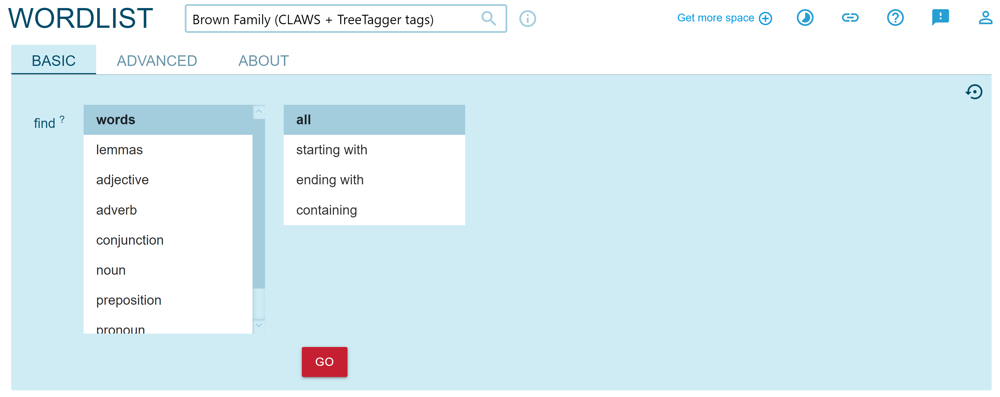

![]()

BASIC interface searching for all words
For this practice, we will use the Brown Family (CLAWS + TreeTagger tags) corpus.
The source code files for all materials are available here: https://github.com/complexico/dipscorling2024
We will compare the results of retrieving words starting with certain strings/character using two approaches:
Retrieving all words then filter
Directly using BASIC’s starting with approach
Pay attention to the results. Why do you think they differ?
IMPLICATION 1: some limitation of SE regarding their result outputs.
IMPLICATION 2: important for our aim to target/generate specific list with certain criteria using more targeted feature.
BASIC tab (Figure 1), select: words > all > GOBASIC interface searching for all words
On the output page of the Wordlist (see Figure 2), click on the Filter feature (i.e., the up-side-down triangle lines, to the right of the “eye-like” symbol on the upper right corner).
Select the option Starting with as shown in Figure 2 below.
Filter option in the Wordlist output, choosing the Starting with condition.
Type in “kn” in the field
Press Enter; the result is shown in Figure 3
kn in the all word list.
You will get five items.
Starting with featureIn the BASIC tab, instead of using words > all, use words > starting with
Then, type kn then hit GO
Compare the current results with that in Figure 3. How many do you get? (Answer key (you need to LOGIN 😒): https://ske.li/15i)
3.1. Why do they differ?
We are still in the BASIC tab. We will explore the productivity (the number of different items/type frequency) of English adjectives containing suffixes. We focus on suffixes meaning ‘having a resemblance of’, particularly comparing -esque (which has a more specialised meaning of ‘in the style of ~’) and -ish (see Bauer 2022: 55).
IMPORTANT: This involves results from two searches: one for each suffix
Later, in the output interface, look at the upper left corner to find basic quantitative information:
the number of items (i.e., the type frequency)
the total frequency of these items (i.e., the token frequency especially of adjectives having these suffixes)
Conceptual aspect:
Operationalisation:
How would you devise a targeted search using just the BASIC feature to retrieve only adjectives ending with these suffixes? 🤔
REMEMBER: you need to run two searches for each suffix
Results:
How many items are there for -esque and what is the total frequency of these -esque adjectives? (Answer key: https://ske.li/15k)
How many items are there for -ish and what is the total frequency of these -ish adjectives? (Answer key: https://ske.li/15l)
Which suffix is more productive (in terms of the total number of items) in this Brown Family (CLAWS + TreeTagger tags) corpus? Is your intuition supported by the data?
We are now in the ADVANCED tab of Wordlist.
Conceptual aspect:
these two words refer roughly to the same objects (see Google Image results for windscreen and windshield)
are they different in terms of their frequency?
try to check their frequency in ALL Brown Family first (think about how you would devise the search)
then, check their frequency in the combined region corpus.
American: BROWN, FROWN, AE06 (AmE)
British: FLOB, BLOB, LOB, BE06 (BrE)
Do you learn a pattern of use of these two words from their frequency searches? Let’s discuss!
Overall frequency in the WHOLE BROWN FAMILY of
windshield (answer key: https://ske.li/15n)
windscreen (answer key: https://ske.li/15o)
Frequency by the combined sub-corpus
windsheild in BROWN, FROWN, AE06 (AmE) (answer key: https://ske.li/15p)
windsheild in FLOB, BLOB, LOB, BE06 (BrE) (answer key: https://ske.li/15r)
windscreen in BROWN, FROWN, AE06 (AmE) (answer key: https://ske.li/15t)
windscreen in FLOB, BLOB, LOB, BE06 (BrE) (answer key: https://ske.li/15s)
Do you learn a pattern of use of these two words from their frequency searches? Let’s discuss!
This practice is inspired from Stefanowitsch (2020).